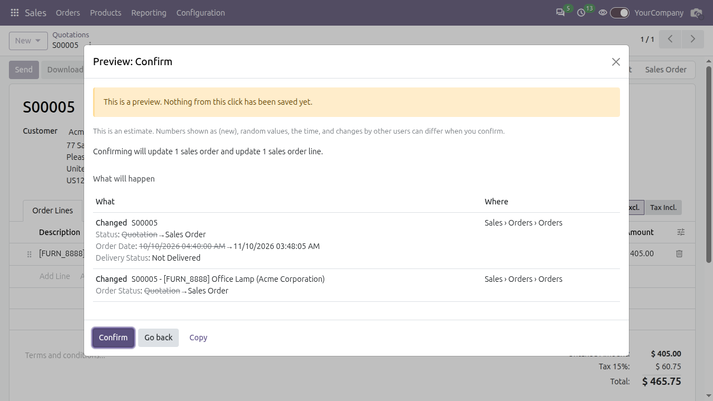
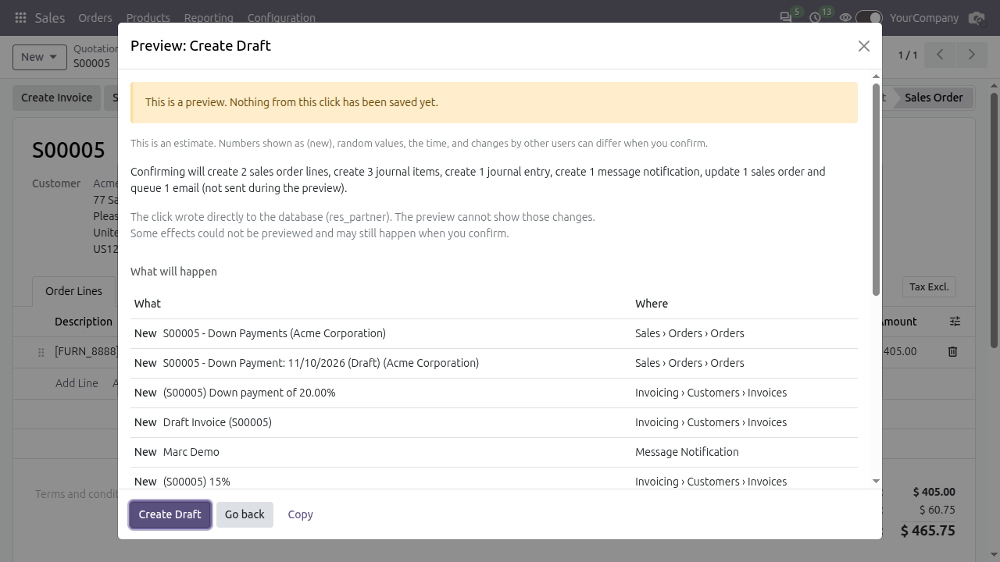
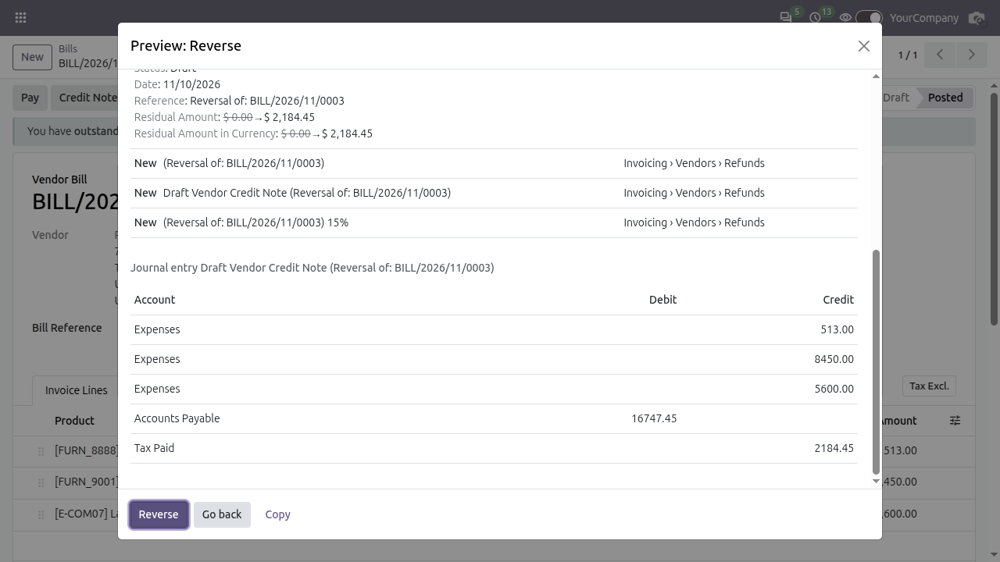
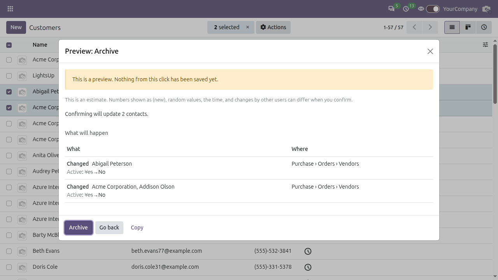
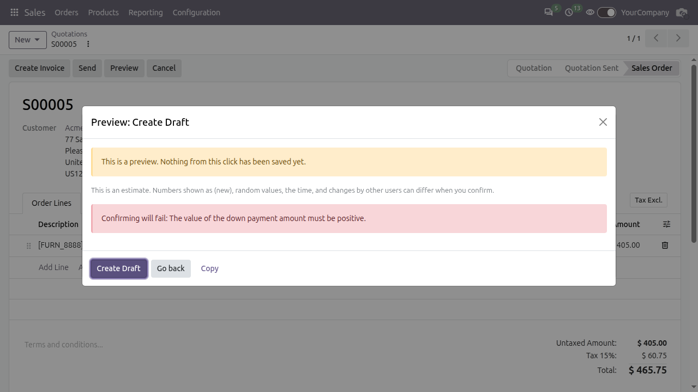
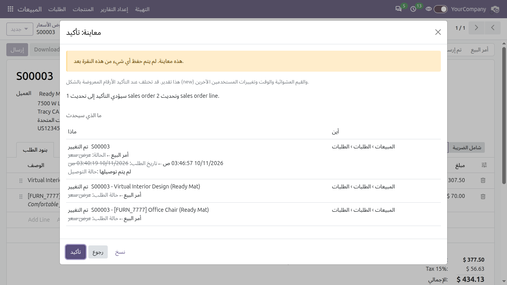
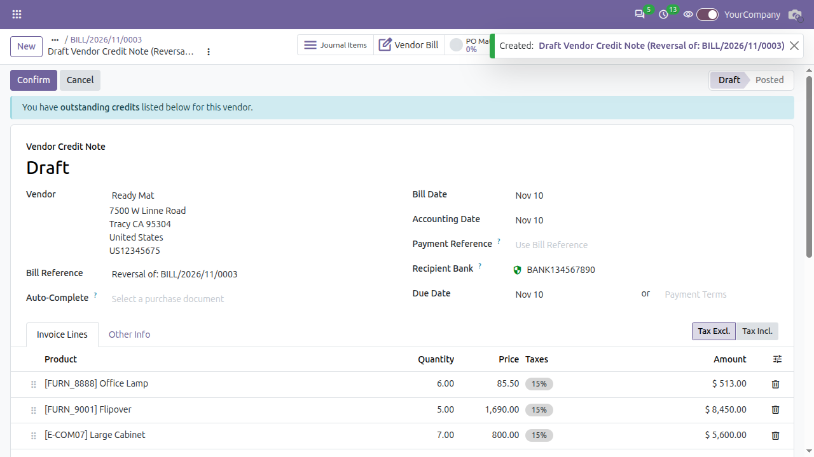

Preview Mode
See what a button click will create, change or delete, and where, before you confirm it. Nothing is saved during the preview.
Free and open source (LGPL-3) · Odoo 20.0 · Community and Enterprise · Every app, nothing to configure
See what a button click will create, change or delete, and where, before you confirm it. Nothing is saved during the preview.
Free and open source (LGPL-3) · Odoo 20.0 · Community and Enterprise · Every app, nothing to configure

The switch in the top bar, on.
Confirm a quotation with the switch on. Each change is New, Changed or Deleted, with old values struck through and the place in Odoo where it lands.

Confirm on a quotation: the order and its lines change.

Create an invoice from an order: new invoice, journal entry and lines, plus the changes to the order.

A click that creates a journal entry also gets an Account, Debit and Credit table.

Archive on two selected contacts in a list.

A click that would fail shows the reason before anything is saved.

The same popup in Arabic, mirrored right to left. French and Spanish are included too.

After a real run, a message links to what was created.
All optional. An administrator sets them in Settings > Technical > System Parameters.
| Key | Default | Effect |
|---|---|---|
preview_mode.enabled | on | Set to False to hide the switch and stop previews for everyone. |
preview_mode.timeout | 10 | Seconds a preview may spend in database statements. |
preview_mode.max_records | 0 | Skip the preview when a click acts on more records than this. 0 means no limit. |
Other tools tell you what happened, or ask you to be sure. Preview Mode shows the result of the click first. The same idea exists in some ERPs for accounting postings; here it covers every app.
| Approach | Shows the result before the click is saved | Works in | Setup | Cost |
|---|---|---|---|---|
| Audit trail modules (for example OCA auditlog, AuditGuard) | No. Records the change after it happened. | Only the models you set up. | Rules per model (auditlog). | Auditlog is free. AuditGuard has a free and a Pro version. |
| Confirmation dialog modules for server actions | No. Shows fixed text such as "Are you sure?". | Server actions only. | Enable per server action. | Varies by module. |
| Undo or reversal modules (for example OCA account_reversal) | No. Fixes the mistake after it was saved. | Accounting documents. | Install the module. | Varies by module. |
| Accounting preview in other ERPs (SAP Simulate Posting, Dynamics 365 Preview Posting) | Yes, for ledger entries. | Accounting postings only. | Built into those products. | Part of those products. |
| Preview Mode | Yes. Runs the real click, shows the result, rolls it back. | Every button that changes data, in every app. | None. Install and turn the switch on. | Free, LGPL-3. |
Audit trails still have a job: they keep a record for compliance. Preview Mode does not replace them, it comes before them.
base and web and should run next to Enterprise (not tested with Enterprise 20). The same module exists for Odoo 16.0 to 19.0, each on its own branch on GitHub.Questions, bug reports and ideas go to GitHub Issues and Discussions of the project: github.com/SamyShaawat/preview_mode. Please say your Odoo version and whether Enterprise is installed.
The module sends no data anywhere and collects no usage statistics.
LGPL-3. Free to use, change and redistribute. Author and maintainer: Samy Mostafa Shaawat.